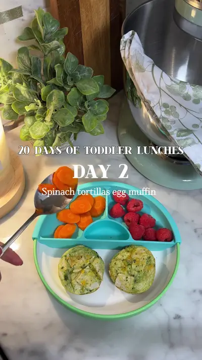

Spinach tortilla egg muffins + carrots + raspberries

Ingredients
- 4 eggs
- ½ cup cottage cheese
- ¼ cup cheddar cheese
- Handful spinach
- 1 large tortilla
Steps
- Blend everything except tortilla.
- Cut tortilla into muffin cups.
- Pour mixture on top.
- Bake at 350°F / 180°C for 15 min
Recipe text as written by @soniamazri on TikTok. Open original